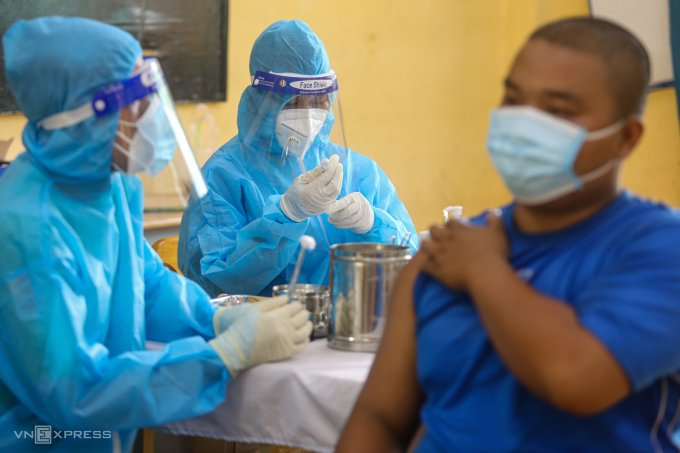

Giám đốc Sở Y tế TP HCM Tăng Chí Thượng cho biết đã có đủ các cơ sở khoa học chứng minh nhiều khả năng biến chủng Omicron đang chiếm ưu thế trong cộng đồng. Điều này phần nào lý giải số bệnh nhân Covid-19 trên địa bàn tăng do biến chủng mới có tốc độ lây nhiễm nhanh.
Nhân viên y tế tiêm vaccine Covid-19 cho người dân tại TP HCM. Ảnh: Thành Nguyễn
Lê Phương